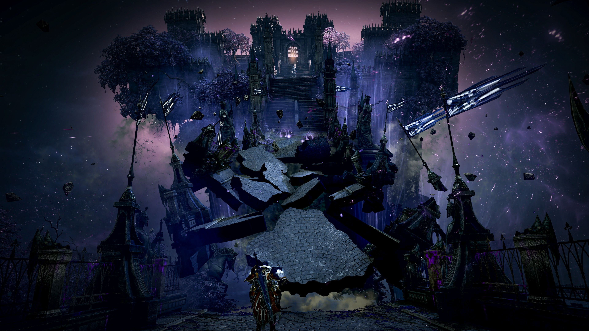
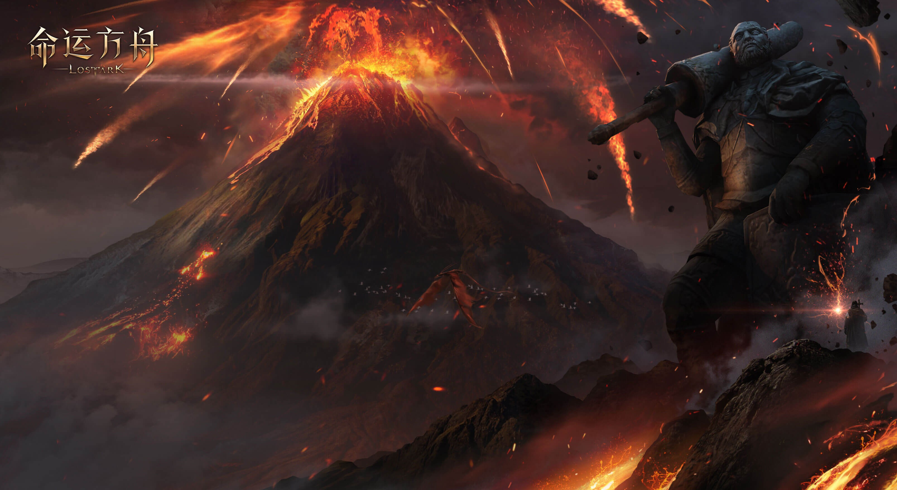
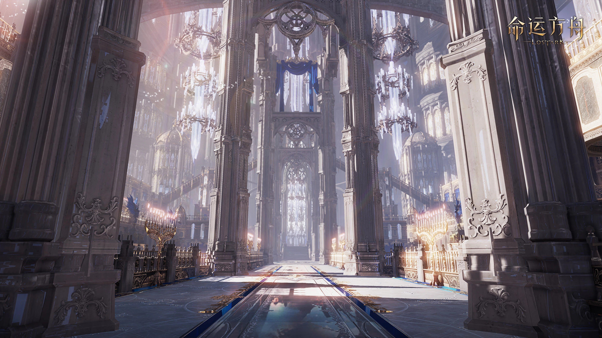

Steam在线第三的“免费挂机”，不想玩
下班回家，打开电脑，屏幕角落的像素小人替你打了一天工——这大概是当代社畜最廉价的“赛博监工”了。就是这款叫《TBH》的免费挂机游戏，这两天把Steam的在线榜搅了个天翻地覆，50万人挂着它，却根本“不玩”它。更魔幻的是，评论区全是“垃圾游戏”的怒吼，在线数据却诚实地出卖了玩家的身体——这帮人到底在图啥？

打开Steam在线榜，《CS2》和《PUBG》旁边硬挤进来一个叫《TBH：Task Bar Hero》的小东西。5月27日上线，免费，两周不到冲到50万同时在线，稳稳排进全球前三。够风光吧？点进商店页，简体中文区“多半差评”。骂服务器烂、骂乱封号、骂市场崩盘、骂宝箱奖励吞了不给。骂得挺狠。可骂归骂，游戏照挂。
问题来了。《TBH》到底是个啥？它把刷宝RPG塞进了电脑任务栏。窗口极小，几个像素小人自动打怪、捡装备、升级，你偶尔点两下技能就行。官方管它叫“迷你放置RPG”，内容量倒不小：3章、4个难度、50多种怪、500多件装备，还有职业DLC和付费扩展包。但这些东西根本不重要。它真正的身份是一台“低保抽奖机”——刷出来的物品能进Steam库存，在市场卖掉。普通货色几分钱，稀有道具曾经挂到20到30美元。免费、自动、能变现，每个环节都精准踩中了“挂机搞钱”的念头。

更狠的是数据。外媒Polygon统计过，51.8万人在线那会儿，Steam评价只有3699条。同样量级的《Dota 2》，评价逼近83万。评价数后来涨了，但那条“在线/评论”的鸿沟始终没填上。说白了，阴兵过境。工作室开Bot批量挂账号，成本接近于零，上百上千个号一起跑，收益滚雪球。普通玩家很快遭了殃：市场里低价垃圾堆成山，服务器开始抽风，宝箱奖励消失、掉线、延迟轮着来。开发团队在公告里承认，物品量把Steam物品服务器干出压力了，V社亲自出面要求限制交易数量。简中区玩家对误封尤其敏感——有人同时开别的游戏，《TBH》反作弊直接给人家Steam资料页扣了个封禁标记，申诉解了也恶心够呛。

换个角度看，差评和在线同时暴涨并不矛盾。玩家骂它，是按游戏体验骂；玩家挂着，是按机会成本算。关掉客户端，就少一次掉落机会；少一次掉落机会，就少一次变现可能性。这台电脑就是一台不需要交电费的矿机，算的是沉没成本——开机就挂着，挂着就有概率，关掉就亏了。此前《Banana》和《Bongo Cat》已经验证过这套桌面寄生模式，《TBH》只是给“等开奖”套了层RPG皮，让玩家在配装、升级的心理暗示里把挂机行为包装得更合理。
回过头看，《TBH》其实是一面镜子。它照出了3A大作越来越“不好玩”的尴尬，也照出了当代玩家“既没时间又渴望收获”的焦虑。当游戏从“第九艺术”退化成了“桌面壁纸”和“低保抽奖机”，这究竟是玩家的懒惰，还是大厂们的悲哀？不过这些都不重要——我就想问一句，在座的各位，你们的《TBH》，今天挂了吗？
关于我们
📱 公众号名称：三天游戏
✍️ 作者：曾三天
扫码关注公众号，获取每日最新资讯

商务合作与版权
商务合作 / 内容投稿 / 品牌推广
请关注公众号「三天游戏」后台留言联系
版权声明：本文由作者整理，转载需注明出处。